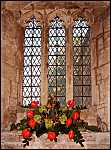
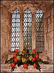
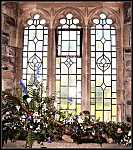
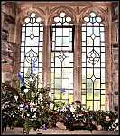

This web site is funded by the Caerwent Community Council ©2000-2018 All rights reserved
Designed by breezegraphic.com Legal Notices
The Lych Gate:
"Welcome to Caerwent Church"
by Patsy Lewis
The Porch:
"The United Kingdom"
By Catherine Watts and Josie Baynton
The Font:
"The Coronation"
By Rosemary Waters
The North West Window:
"The Commonwealth"
By Felicity Hunt
The Memorial Window:
"Royal Bereavements"
By Jean Bolas
The Pulpit:
"The Royal Wedding"
By Maureen Williams
The Chancel Arch:
"The Golden Jubilee"
By Jackie Williams
The Altar:
"Defender of the Faith"
By Ann Thomas and Sonia Sterry
The South Aisle Windows:
"Wales, England,Scotland and Ireland"
By Denise Humble, Marion Jones, Maureen Moody & Sue Jones, and Enid Jones.
Throughout the Church:
"The Pew Decorations"
By Sonia Sterry and the Flower Arranging Class from the Royal Forest of Dean College.
We deeply appreciate their kind generosity, without which
the Flower Festival could not have taken place.
- Mr & Mrs R. Thomas
- Ann Thomas
- Sonia Sterry and the Flower Arranging class at the Royal Forest of Dean College.
- Joan Hereford
- Ken Morgan (for Messrs Newland, Rennie & Wilkins)
- Comben Nurseries
- Mr & Mrs R. E. Griffiths
- Mr & Mrs B Counsell
- Mr & Mrs R Gregory
- Mrs E. Broome (for Messrs. Broome & Co.)
- Philip Blatchley and Son
- Mrs R. Bennett (Slough Farm Shop)
- Mrs Marjorie Morgan
- Mrs Muriel Morgan (Caerwent Post Office)
- Mr & Mrs F. Harris
- Mr P. Morgan (Paul Morgan Builders)
- Mr & Mrs O. Jones
- Mrs H. Brogan of Llanfair Discoed
- Mr & Mrs D. Harper of Llanfair Discoed
- Mrs E. Evans
- Mrs F. Thomas
- Mr & Mrs G. Lloyd
- Mrs P. Manning of Newchurch
- Shirenewton Church
Caerwent Parish Church
THE QUEEN'S GOLDEN JUBILEE
FESTIVAL OF FLOWERS
Golden Jubilee themed floral arrangements in Caerwent Parish Church
Click on any picture below to view an enlargement

 


 
